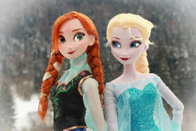

Mi alma te ama,Tu eres la luz de mi primavera.De mi primavera ay ay ay,Tu no ves, tu no ves,Ay mamio mami tu ves, mi cielo mi luna,
Очень долго я тебя ждала,И всё как в сказке со мной случилось.Закружилась моя голова,И я влюбилась.Позабыла обо всех делах
Дашо нур даржа деш,Дуньен чу можа малх кхета.Седарчий цу стиглахь,Безамна шаьш къежаш хета.
Цонхны чинь дэргэдэх өнчин ганц модноосЦор ганцхан навч нь дусаллааЧи түүн шиг битгий гансарч уйлаачНар мандана дахиад л шинэ өглөө
поискатэндэ
Σε παρακαλώ μην είσαι σαν μικρό παιδίη αγάπη δεν αντέχει στη πολύ τριβήέλεγα κι εγώ να πάμε ως τον ουρανόμα ήταν λάθος κάτι τέτοιο να σου το ζητώ

Chorus (repeating):
All I needIs to be lovedBy you...
ищеме хайрт дуу болсоон
Дараа би бүгдийг нь зөв хийнэДараа би араас чинь гүйнэДараа би хийе гэж амжаагүй бүхнээГанцараа зоригтойгоор хийнэ.
Ямар гоё байна гадааЯг одоо уулзье гэх үүХаагуур ч хамаагүй явьяХаана ч суусан яахав хоёул
Эгэлхэн амдралын минь,Энэхэн биеийг минь өсгөсөнЭнгэрт нь бүлээцэж эрхэлсэн он жилүүдЭргэн хэзээч олдохгүй.Аав минь та наддаа
Hoy en mi ventana brilla el solY un corazón se pone tristeContemplando la ciudadPorque te vas
Нет, ты ко мне не вернёшься, меня не коснёшься,Не вынесешь больше беды моей!
Ни минуты покоя, только ты и ты.Мир наполнен тобою, я верю в мечты.Ты близко, ты скоро, я жду, я молю.Я признаться готова, что тебя, что тебя я люблю!
Nav nozīmes laikam, viss sliktais izgaist kā vējā,Kad mīlas kvēlošā uguns tevi dāvāja man.Kā divas karstas sirdis mēs griežamies dejā,
Mans draugs mēs ar Tevi dzīvojam Latvijā.Mēs bieži nesaprotam, bet mums tā ir vienīgā.Tu mosties ar Latvijas rītu ej gulēt, kad saule riet.
Kaut kur uz pasaules šīs Trīs vītoli augaKas garām tiem gāja tos par sērīgiem saucaRudeņos tie liecās lapas kamolā vēla,
Είμαι καλύτερα έχω κέφια τρέλα Για νησιά μαγικά θα την κάνω Είμαι καλύτερα δε σε σκέφτομαι πια Τ’ όνομα σου έχω σβήσει απ’ την άμμο
Сквозь огни всех миров,Сквозь миллионы дорогЯ иду столько дней,Чтобы ты найти меня смог. Ты узнаешь меня по своим приметам.
Alle skal hen et stedalle kommer fra noget og har et landskab med inden iaf minder og steder, stemninger og nostalgijeg kommer med kærlighed